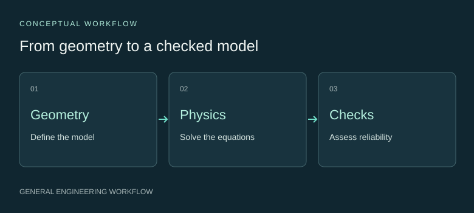

3D FEM & thermal modelling
Stochastic geometry and multiphysics simulation for studying heat transfer in fibrous materials.
Represent geometry and thermal physics.
Modelling heterogeneous materials requires choices about geometry, material properties, boundary conditions and heat-transfer mechanisms. The engineering task is to turn those choices into a model that can be solved and inspected.
My doctoral work involved stochastic three-dimensional fibre geometries and coupled conduction–radiation modelling.
Build a controlled simulation workflow.

My implementation
I developed geometry-generation and COMSOL modelling workflows, organised controlled parameter studies and processed simulation exports. My tools include Mathematica, the COMSOL Java API, PowerShell and Python.
- Construct and parameterise three-dimensional geometries.
- Configure materials, thermal physics, meshes and stationary studies.
- Automate model variations and organise exported fields and tables.
Check the computation before interpreting it.
I use numerical checks to assess whether the model configuration supports the intended comparison: units, selections, boundary conditions, mesh refinement, solver behaviour and energy balance.
A reproducible baseline provides a starting point for a parameter study. Consistent output definitions help make the cases comparable.
Connect modelling with practical analysis.
This work developed my ability to formulate multiphysics problems, automate simulation workflows and explain modelling assumptions. These capabilities support scientific-software applications, structured sensitivity studies and technical problem-solving.
Explore simulation automation ↗Research Disclosure
Detailed research findings are currently restricted. This portfolio provides a high-level overview of the work, focusing on the methodologies, technical capabilities and potential engineering applications.